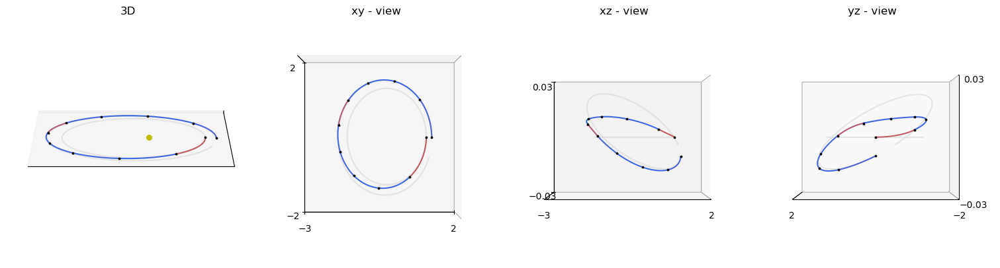
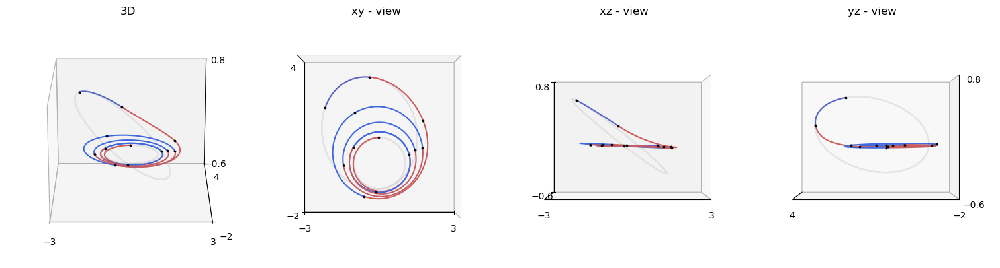
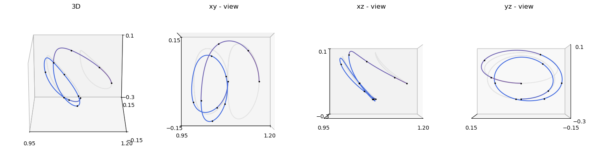
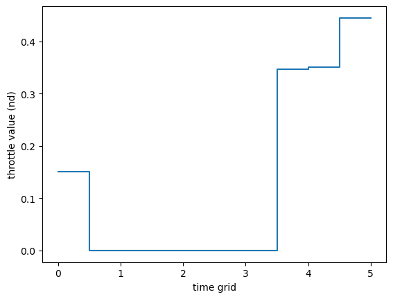
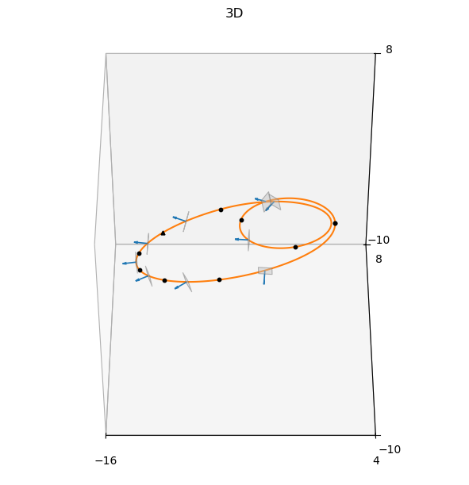

Zero-Order Hold UDP: point-to-point trajectory optimization#
This tutorial shows how to formulate and solve point-to-point trajectory optimization problems with:
pykep.trajopt.zoh_point2point(low-thrust)pykep.trajopt.zoh_ss_point2point(solar sailing)
The focus is practical usage in an optimization workflow: problem scaling, UDP construction, gradient verification, and solution inspection across multiple dynamics.
For implementation details and API reference, see:
Decision vector and time encoding#
For zoh_point2point, the decision vector is:
with:
\(m_f\): final mass,
\((T_k, i_{xk}, i_{yk}, i_{zk})\): segment control magnitude and direction components,
\(tof\): total time of flight,
\(w_k\): optional softmax weights for variable segment durations.
Uniform time grid#
With time_encoding="uniform", all segments have equal duration:
We start with a two-body Cartesian low-thrust case, then repeat the same optimization workflow on MEE, CR3BP, and solar-sail dynamics.
First, import the required packages.
import pykep as pk
import numpy as np
import pygmo as pg
import pygmo_plugins_nonfree as ppnf
from matplotlib import pyplot as plt
Configure the optimizer. Here we use IPOPT with strict tolerances for a clear gradient-based reference setup.
# IPOPT DEFAULT --------------------------------------------------------------------
ipopt_integer_options = {
"max_iter": 2000,
}
ipopt_numeric_options = {
"tol": 1e-10,
}
ipopt_string_options = {
"sb": "yes",
}
ipopt = pg.ipopt()
ipopt.set_integer_options(ipopt_integer_options)
ipopt.set_numeric_options(ipopt_numeric_options)
ipopt.set_string_options(ipopt_string_options)
#-----------------------------------------------------------------------------------
algo = pg.algorithm(ipopt)
Two-body dynamics (Cartesian)#
Workflow in this section:
Load a benchmark case from TOPS.
Build integrators and scaled units.
Construct the UDP and verify gradients.
Run IPOPT and inspect the trajectory.
# Load a TWOBODY instance from the TOPS database
db = "Two-body Keplerian"
prob_name = "P0"
gym_problem = pk.trajopt.gym.tops_twobody[prob_name]
print("Problem name: ", db+ " " + prob_name)
print("Problem info: ", gym_problem["info"])
Problem name: Two-body Keplerian P0
Problem info: Mildly-elliptic to mildly-elliptic transfer (e_s~0.201, e_f~0.210) in fixed tof -> T=0.22N, Isp=3000s
# ZOH integrators for two-body Cartesian dynamics
tol = 1e-16
tol_var = 1e-8
ta_twobody = pk.ta.get_zoh_kep(tol)
ta_twobody_var = pk.ta.get_zoh_kep_var(tol_var)
# Non-dimensional scales
MU = gym_problem["mu"]
L = np.linalg.norm(gym_problem["state_s"][:3])
MASS = np.linalg.norm(gym_problem["m_s"])
TIME = np.sqrt(L**3 / MU)
V = L / TIME
ACC = V / TIME
F = MASS * ACC
# Scale states and bounds to the integrator units
states = [it / L for it in gym_problem["state_s"][:3]] + [it / V for it in gym_problem["state_s"][3:6]]
statef = [it / L for it in gym_problem["state_f"][:3]] + [it / V for it in gym_problem["state_f"][3:6]]
ms = gym_problem["m_s"] / MASS
max_thrust = gym_problem["max_thrust"] / F
tof_bounds = [it / TIME for it in gym_problem["tof_bounds"]]
# Set model parameter(s) in the integrators
veff_nd = gym_problem["veff"] / V
ta_twobody.pars[4] = 1.0 / veff_nd
ta_twobody_var.pars[4] = 1.0 / veff_nd
# UDP configuration
nseg = 10
time_encoding = "uniform"
cut = 0.5
udp = pk.trajopt.zoh_point2point(
states=states, # 6D state only (mass handled separately)
statef=statef,
ms=ms,
max_thrust=max_thrust,
tof_bounds=tof_bounds,
mf_bounds=[ms / 2.0, ms],
nseg=nseg,
cut=cut,
tas=[ta_twobody, ta_twobody_var],
time_encoding=time_encoding,
inequalities_for_tc=True,
max_steps=1000,
)
prob = pg.problem(udp)
prob.c_tol = 1e-6
Check analytical gradients against finite differences before optimization.
pop = pg.population(prob, 1)
(pg.estimate_gradient_h(udp.fitness, pop.champion_x, dx=1e-8)-udp.gradient(pop.champion_x)).max(), (pg.estimate_gradient_h(udp.fitness, pop.champion_x, dx=1e-8)-udp.gradient(pop.champion_x)).min()
(3.8730949913912127e-07, -3.0583021247117606e-07)
pop = algo.evolve(pop)
print(prob.feasibility_f(pop.champion_f))
print("Final mass:", pop.champion_x[0] * MASS)
print("Final tof:", pop.champion_x[4*nseg+1] * TIME)
True
Final mass: 0.919710082837
Final tof: 11.0
fig = plt.figure(figsize=(15, 4), layout="constrained")
ax3d = fig.add_subplot(1, 4, 1, projection="3d")
ax_xy = fig.add_subplot(1, 4, 2, projection="3d")
ax_xz = fig.add_subplot(1, 4, 3, projection="3d")
ax_yz = fig.add_subplot(1, 4, 4, projection="3d")
axes = [ax3d, ax_xy, ax_xz, ax_yz]
for ax in axes:
udp.plot(
x=pop.champion_x,
N=100,
mark_segments=True,
s=3,
c="k",
ax=ax,
to_cartesian=lambda x: np.asarray(
[x[0] * L, x[1] * L, x[2] * L, x[3] * V, x[4] * V, x[5] * V]
),
orbit_color="lightgray",
)
# Keep only boundary ticks to emphasize geometry
for ax in axes:
ax.set_xticks([ax.get_xticks()[0], ax.get_xticks()[-1]])
ax.set_yticks([ax.get_yticks()[0], ax.get_yticks()[-1]])
ax.set_zticks([ax.get_zticks()[0], ax.get_zticks()[-1]])
ax_xy.set_zticks([])
ax_xz.set_yticks([])
ax_yz.set_xticks([])
ax3d.view_init(elev=20, azim=270)
ax3d.set_aspect("equal")
pk.plot.add_sun(ax3d)
ax_xy.view_init(elev=90, azim=-90)
ax_xz.view_init(elev=0, azim=-90)
ax_yz.view_init(elev=0, azim=180)
ax3d.set_title("3D")
ax_xy.set_title("xy - view")
ax_xz.set_title("xz - view")
ax_yz.set_title("yz - view")
Text(0.5, 0.92, 'yz - view')

Two-body dynamics (Modified Equinoctial Elements)#
The same UDP workflow applies with a different state representation and integrator pair. Here we switch from Cartesian to MEE while keeping the optimization structure unchanged.
For state conventions and conversion utilities, see Elements and conversions.
# Load a MEE instance from the TOPS database
db = "Two-body MEE"
prob_name = "P0"
gym_problem = pk.trajopt.gym.tops_mee[prob_name]
print("Problem name: ", db + " " + prob_name)
print("Problem info: ", gym_problem["info"])
Problem name: Two-body MEE P0
Problem info: Dionysus problem (doi: 10.2514/1.G000379) - Fixed time
# ZOH integrators for two-body MEE dynamics
tol = 1e-16
tol_var = 1e-8
ta_twobody_mee = pk.ta.get_zoh_eq(tol)
ta_twobody_mee_var = pk.ta.get_zoh_eq_var(tol_var)
# Non-dimensional scales
MU = gym_problem["mu"]
L = gym_problem["state_s"][0]
MASS = gym_problem["m_s"]
TIME = np.sqrt(L**3 / MU)
V = L / TIME
ACC = V / TIME
F = MASS * ACC
# In MEE, only the semi-major-axis-like component is length-scaled
states = [it / L for it in gym_problem["state_s"][:1]] + [it for it in gym_problem["state_s"][1:6]]
statef = [it / L for it in gym_problem["state_f"][:1]] + [it for it in gym_problem["state_f"][1:6]]
ms = gym_problem["m_s"] / MASS
max_thrust = gym_problem["max_thrust"] / F
tof_bounds = [it / TIME for it in gym_problem["tof_bounds"]]
veff_nd = gym_problem["veff"] / V
ta_twobody_mee.pars[4] = 1.0 / veff_nd
ta_twobody_mee_var.pars[4] = 1.0 / veff_nd
# UDP configuration
nseg = 11
time_encoding = "uniform"
cut = 0.5
udp = pk.trajopt.zoh_point2point(
states=states,
statef=statef,
ms=ms,
max_thrust=max_thrust,
tof_bounds=tof_bounds,
mf_bounds=[ms / 10.0, ms],
nseg=nseg,
cut=cut,
tas=[ta_twobody_mee, ta_twobody_mee_var],
time_encoding=time_encoding,
inequalities_for_tc=True,
max_steps=1000,
)
prob = pg.problem(udp)
prob.c_tol = 1e-6
pop = pg.population(prob, 1)
(pg.estimate_gradient_h(udp.fitness, pop.champion_x, dx=1e-8)-udp.gradient(pop.champion_x)).max(), (pg.estimate_gradient_h(udp.fitness, pop.champion_x, dx=1e-8)-udp.gradient(pop.champion_x)).min()
(2.0611357014720111e-06, -1.4823118779705252e-06)
pop = algo.evolve(pop)
print(prob.feasibility_f(pop.champion_f))
print("Final mass:", pop.champion_x[0] * MASS)
print("Final tof:", pop.champion_x[4*nseg+1] * TIME)
True
Final mass: 0.615843476965
Final tof: 60.7909197787
fig = plt.figure(figsize=(15, 4), layout="constrained")
ax3d = fig.add_subplot(1, 4, 1, projection="3d") # 3D view
ax_xy = fig.add_subplot(1, 4, 2, projection="3d") # look along +z (XY plane)
ax_xz = fig.add_subplot(1, 4, 3, projection="3d") # look along +y (XZ plane)
ax_yz = fig.add_subplot(1, 4, 4, projection="3d") # look along +x (YZ plane)
axes = [ax3d, ax_xy, ax_xz, ax_yz]
for ax in axes:
udp.plot(
x=pop.champion_x,
N=300,
mark_segments=True,
s=3,
c="k",
ax=ax,
to_cartesian=lambda x: np.array(
pk.mee2ic([x[0] * L, x[1], x[2], x[3], x[4], x[5]], mu=1.0)
).flatten(),
orbit_color="lightgray",
)
# We remove the ticks for clarity
for ax in axes:
ax.set_xticks([ax.get_xticks()[0], ax.get_xticks()[-1]])
ax.set_yticks([ax.get_yticks()[0], ax.get_yticks()[-1]])
ax.set_zticks([ax.get_zticks()[0], ax.get_zticks()[-1]])
ax_xy.set_zticks([])
ax_xz.set_yticks([])
ax_yz.set_xticks([])
# Main 3D view
ax3d.view_init(elev=20, azim=270)
# Plane-aligned views
ax_xy.view_init(elev=90, azim=-90)
ax_xz.view_init(elev=0, azim=-90)
ax_yz.view_init(elev=0, azim=180)
ax3d.set_title("3D")
ax_xy.set_title("xy - view")
ax_xz.set_title("xz - view")
ax_yz.set_title("yz - view")
Text(0.5, 0.92, 'yz - view')

Circular Restricted Three-Body Problem (CR3BP)#
This section applies the same UDP workflow in CR3BP coordinates, with the corresponding ZOH CR3BP integrators and parameters.
For model-specific background, see CR3BP dynamics.
# Load a CR3BP instance from the TOPS database
db = "Circular Restricted Three-Body Problem"
prob_name = "P0"
gym_problem = pk.trajopt.gym.tops_cr3bp[prob_name]
print("Problem name: ", db + " " + prob_name)
print("Problem info: ", gym_problem["info"])
Problem name: Circular Restricted Three-Body Problem P0
Problem info: Halo 2 Halo in fixed tof
# ZOH integrators for CR3BP dynamics
tol = 1e-16
tol_var = 1e-8
ta_cr3bp = pk.ta.get_zoh_cr3bp(tol)
ta_cr3bp_var = pk.ta.get_zoh_cr3bp_var(tol_var)
# CR3BP-specific parameters
veff_nd = gym_problem["veff"]
mu_cr3bp = gym_problem["mu_cr3bp"]
ta_cr3bp.pars[4] = 1.0 / veff_nd
ta_cr3bp_var.pars[4] = 1.0 / veff_nd
ta_cr3bp.pars[5] = mu_cr3bp
ta_cr3bp_var.pars[5] = mu_cr3bp
# UDP configuration
nseg = 10
time_encoding = "uniform"
cut = 0.5
udp = pk.trajopt.zoh_point2point(
states=gym_problem["state_s"],
statef=gym_problem["state_f"],
ms=gym_problem["m_s"],
max_thrust=gym_problem["max_thrust"],
tof_bounds=gym_problem["tof_bounds"],
mf_bounds=[gym_problem["m_s"] / 2.0, gym_problem["m_s"]],
nseg=nseg,
cut=cut,
tas=[ta_cr3bp, ta_cr3bp_var],
time_encoding=time_encoding,
max_steps=1000,
inequalities_for_tc=False,
)
prob = pg.problem(udp)
prob.c_tol = 1e-6
pop = pg.population(prob, 1)
(pg.estimate_gradient_h(udp.fitness, pop.champion_x, dx=1e-8)-udp.gradient(pop.champion_x)).max(), (pg.estimate_gradient_h(udp.fitness, pop.champion_x, dx=1e-8)-udp.gradient(pop.champion_x)).min()
(1.4561294462006602e-06, -2.7896538594696096e-06)
pop = algo.evolve(pop)
print(prob.feasibility_f(pop.champion_f))
print("Final mass:", pop.champion_x[0] * MASS)
print("Final tof:", pop.champion_x[4*nseg+1] * TIME)
True
Final mass: 0.983160282028
Final tof: 4.99770747418
fig = plt.figure(figsize=(15, 4), layout="constrained")
ax3d = fig.add_subplot(1, 4, 1, projection="3d") # 3D view
ax_xy = fig.add_subplot(1, 4, 2, projection="3d") # look along +z (XY plane)
ax_xz = fig.add_subplot(1, 4, 3, projection="3d") # look along +y (XZ plane)
ax_yz = fig.add_subplot(1, 4, 4, projection="3d") # look along +x (YZ plane)
axes = [ax3d, ax_xy, ax_xz, ax_yz]
#xmin, xmax = 0.8, 1.3
#ymin, ymax = -0.3, 0.3
#zmin, zmax = -0.2, 0.2
for ax in axes:
udp.plot(
x=pop.champion_x,
N=1000,
mark_segments=True,
s=3,
c="k",
ax=ax,
orbit_color="lightgray",
)
# We remove the ticks for clarity
for ax in axes:
ax.set_xticks([ax.get_xticks()[0], ax.get_xticks()[-1]])
ax.set_yticks([ax.get_yticks()[0], ax.get_yticks()[-1]])
ax.set_zticks([ax.get_zticks()[0], ax.get_zticks()[-1]])
ax_xy.set_zticks([])
ax_xz.set_yticks([])
ax_yz.set_xticks([])
ax3d.view_init(elev=20, azim=270)
ax_xy.view_init(elev=90, azim=-90)
ax_xz.view_init(elev=0, azim=-90)
ax_yz.view_init(elev=0, azim=180)
ax3d.set_title("3D")
ax_xy.set_title("xy - view")
ax_xz.set_title("xz - view")
ax_yz.set_title("yz - view")
Text(0.5, 0.92, 'yz - view')

udp.plot_throttle(pop.champion_x);

Solar-sail dynamics#
For solar sailing, use the dedicated UDP pykep.trajopt.zoh_ss_point2point.
The workflow is identical: scale units, instantiate integrators, build the UDP, verify gradients, and optimize.
For sail-leg details, use the generic Zero-Order Hold leg tutorial with 6D dynamics and 2 controls, plus the Trajectory optimization API.
# Load a SOLARSAILING instance from the TOPS database
db = "ss"
prob_name = "P1"
gym_problem = pk.trajopt.gym.tops_ss[prob_name]
print("Problem name: ", db + " " + prob_name)
print("Problem info: ", gym_problem["info"])
Problem name: ss P1
Problem info: Eccentric (e=0.5, a=2) to highly-eccentric (e=0.9, a=10) orbit at periapsis (rp=1, nd)
# ZOH integrators for solar-sail dynamics
tol = 1e-16
tol_var = 1e-8
ta_ss = pk.ta.get_zoh_ss(tol)
ta_ss_var = pk.ta.get_zoh_ss_var(tol_var)
# Non-dimensional scales
MU = gym_problem["mu"]
L = gym_problem["L"]
TIME = np.sqrt(L**3 / MU)
V = L / TIME
ACC = V / TIME
# Scale states and bounds
states = [it / L for it in gym_problem["state_s"][:3]] + [it / V for it in gym_problem["state_s"][3:6]]
statef = [it / L for it in gym_problem["state_f"][:3]] + [it / V for it in gym_problem["state_f"][3:6]]
c_sail = gym_problem["c_sail"] / ACC
tof_bounds = [it / TIME for it in gym_problem["tof_bounds"]]
# Set sail acceleration parameter
ta_ss.pars[2] = c_sail
ta_ss_var.pars[2] = c_sail
# UDP configuration
nseg = 9
time_encoding = "uniform"
cut = 0.5
udp = pk.trajopt.zoh_ss_point2point(
states=states,
statef=statef,
tof_bounds=tof_bounds,
nseg=nseg,
cut=cut,
tas=[ta_ss, ta_ss_var],
time_encoding=time_encoding,
max_steps=1000,
)
prob = pg.problem(udp)
prob.c_tol = 1e-6
pop = pg.population(prob, 1)
(pg.estimate_gradient_h(udp.fitness, pop.champion_x, dx=1e-8)-udp.gradient(pop.champion_x)).max(), (pg.estimate_gradient_h(udp.fitness, pop.champion_x, dx=1e-8)-udp.gradient(pop.champion_x)).min()
(3.323305667490839e-06, -4.2279427692193394e-06)
pop = algo.evolve(pop)
print(prob.feasibility_f(pop.champion_f))
True
fig = plt.figure(figsize=(6, 6), layout="constrained")
ax = fig.add_subplot(1, 1, 1, projection="3d") # 3D view
udp.plot(x=pop.champion_x, N=100, mark_segments=True, ax=ax, sail_size=0.5, s=10, c='k')
ax.set_xticks([ax.get_xticks()[0], ax.get_xticks()[-1]])
ax.set_yticks([ax.get_yticks()[0], ax.get_yticks()[-1]])
ax.set_zticks([ax.get_zticks()[0], ax.get_zticks()[-1]])
# Main 3D view
ax.view_init(elev=45, azim=270)
ax.set_title("3D")
Text(0.5, 0.92, '3D')
